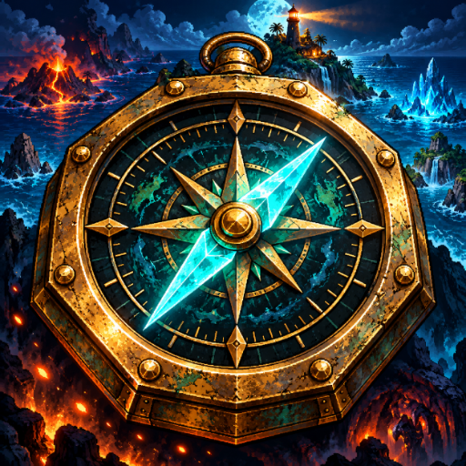
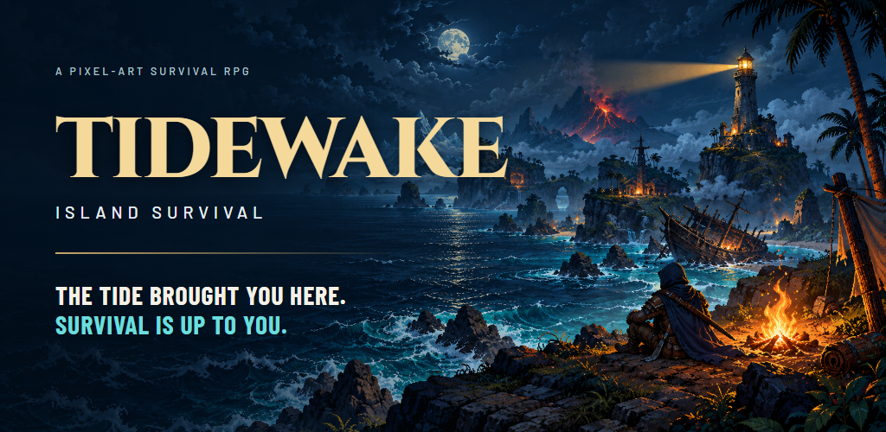
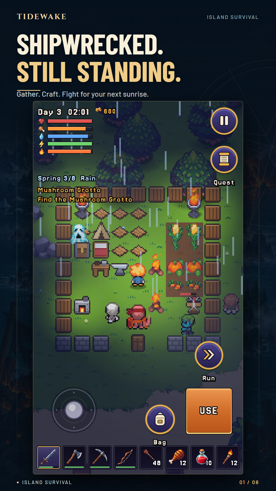
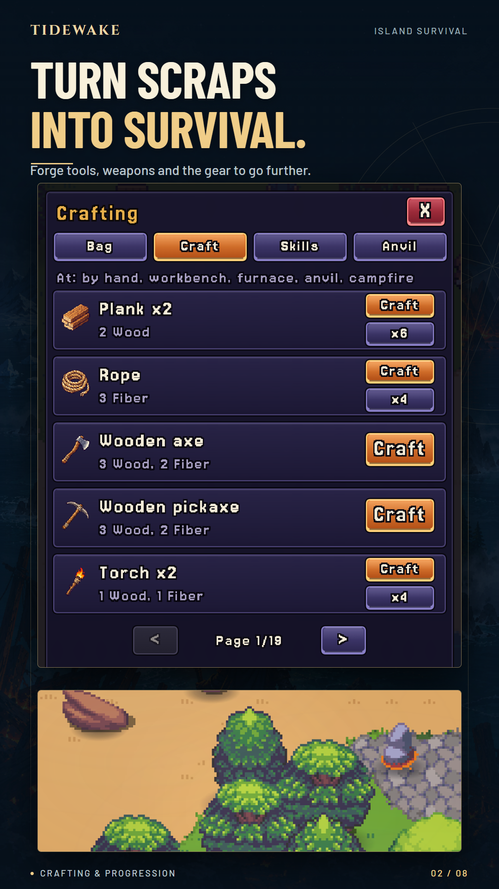
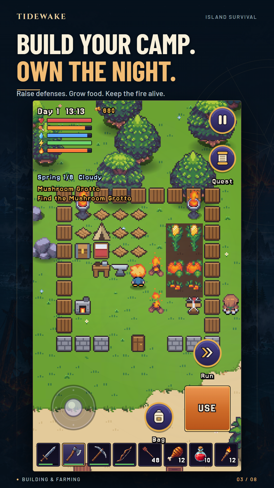
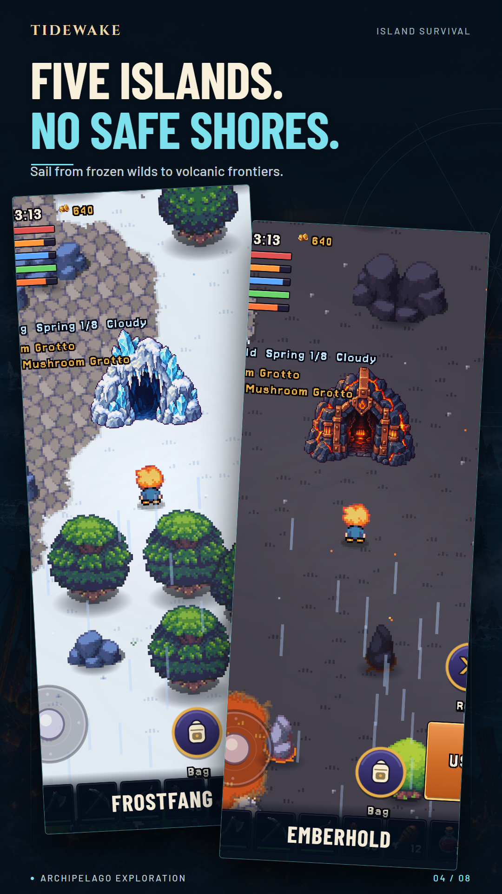
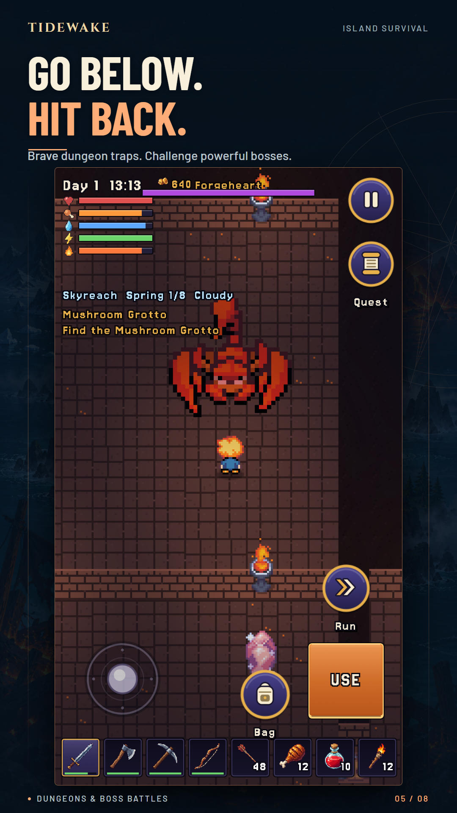
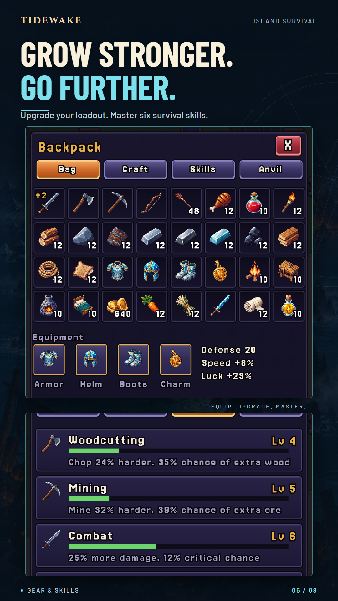
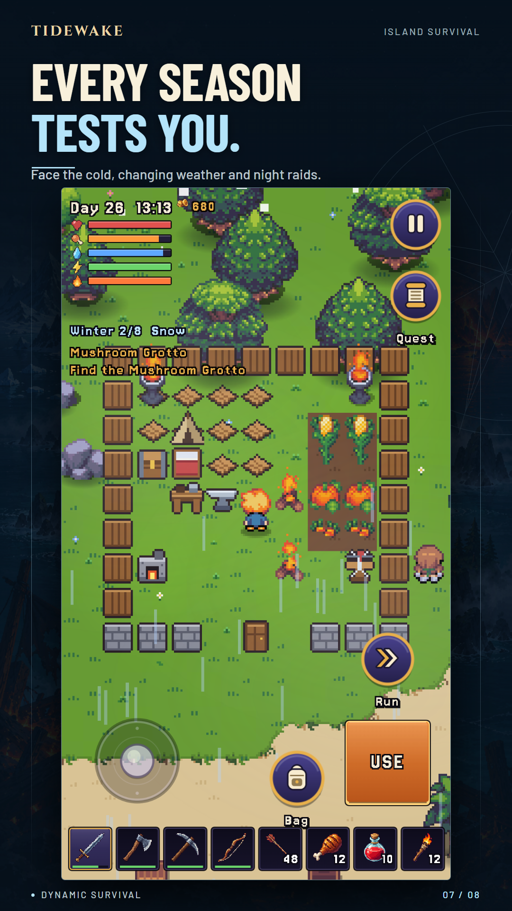
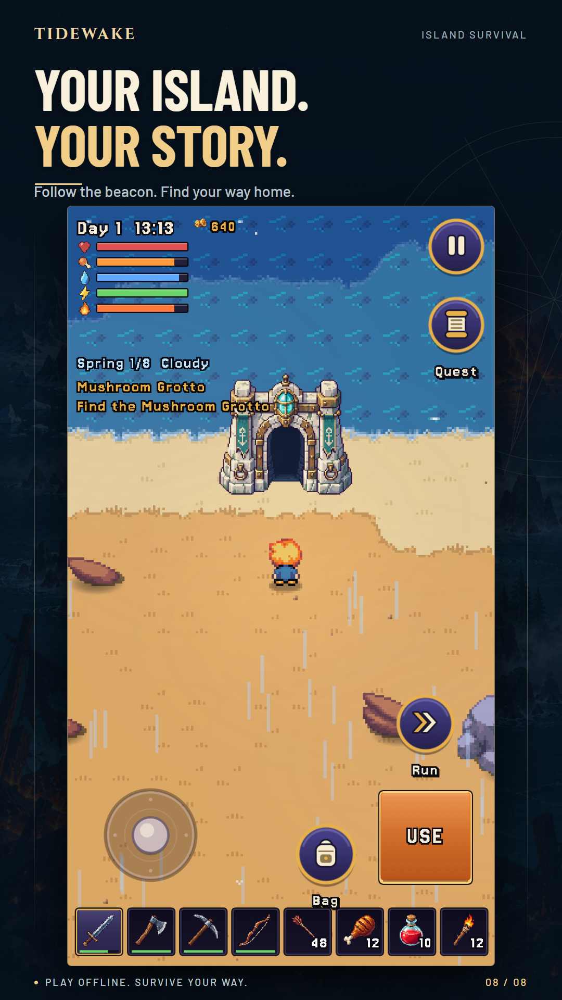

App icon ↓512 × 512 PNG

High-resolution icon ↓1024 × 1024 PNG
A cohesive English campaign for Tidewake: Island Survival. An iconic nautical compass, cinematic hooded artwork, eight gameplay screenshots, and a 34-second Remotion trailer with an original score.
DOWNLOAD THE COMPLETE KIT ↓


01 Island survival

02 Crafting and progression

03 Building and farming

04 Archipelago exploration

05 Dungeons and bosses

06 Gear and skills

07 Weather and survival

08 Story and offline play
Gameplay is captured from the running game. Inventory, camp structures, weather, travel, and encounters were staged through the game's existing QA hooks. Temporary notification toasts were hidden; the game's primary UI and artwork were preserved.
Download the screenshot overview ↓A fast threat-led opening, real gathering and camp gameplay, crafting, elemental islands, two boss encounters, gear progression, the Endless Depths, and a lighthouse payoff. The score and transition effects were synthesized for this film. The full Remotion project is included.
For Google Play's preview video, upload the landscape MP4 to your YouTube account, then add its public or unlisted video URL to Play Console. The video has not been published or uploaded.